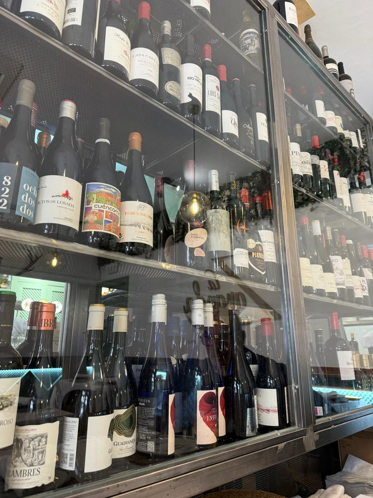
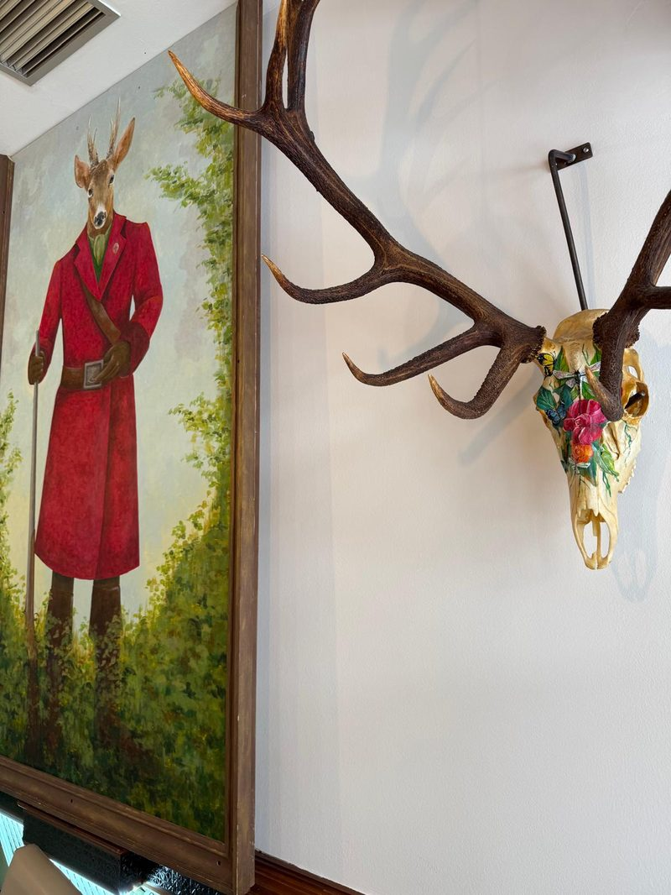
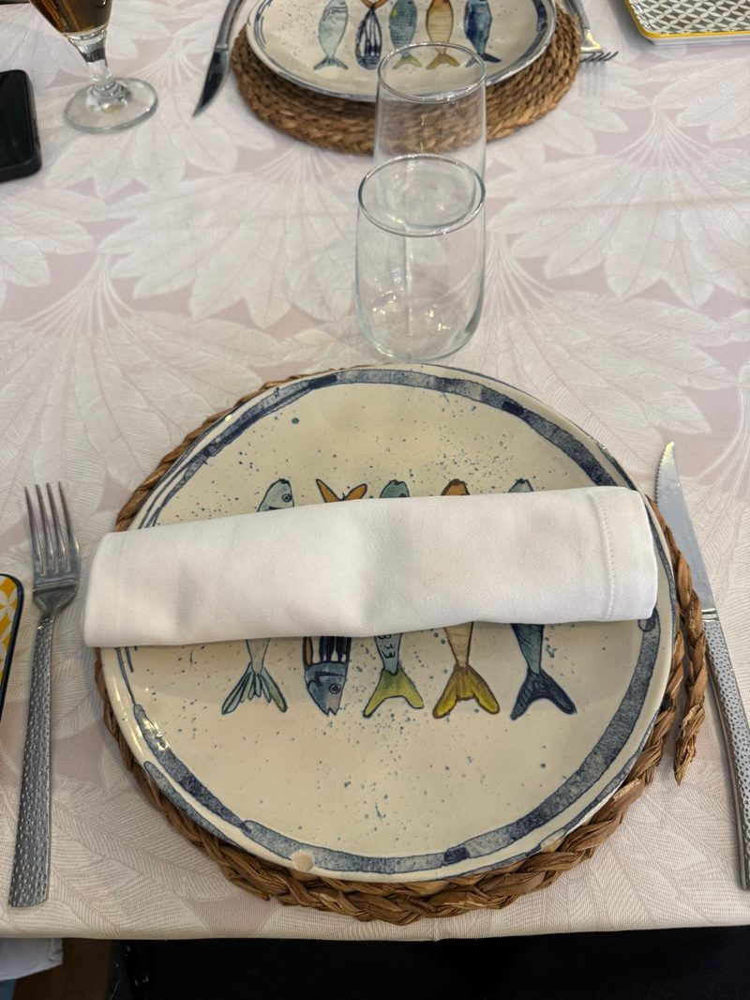
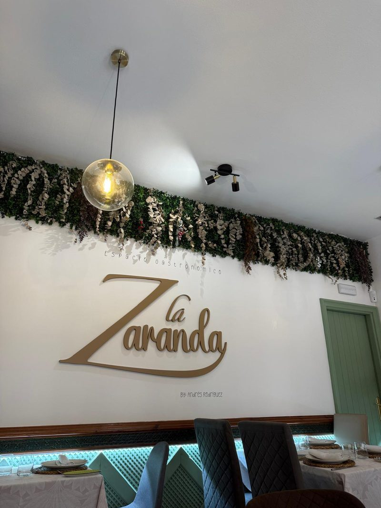
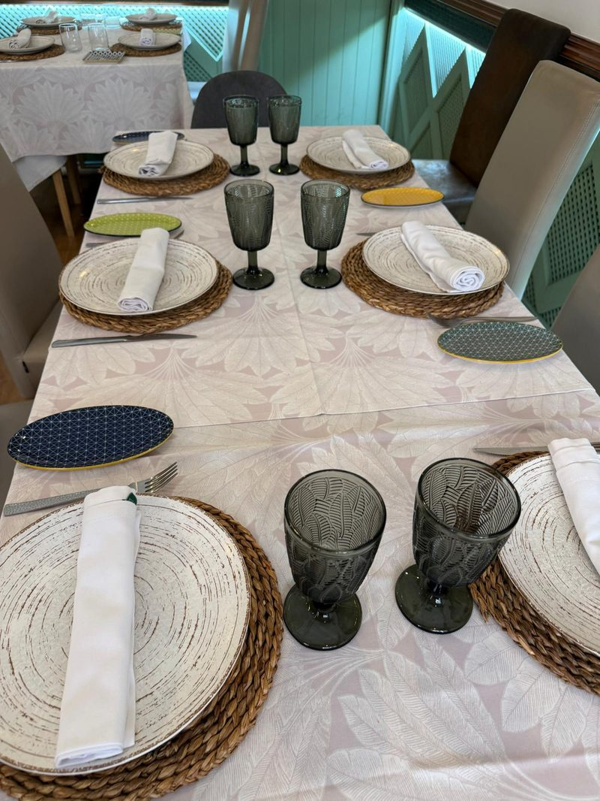
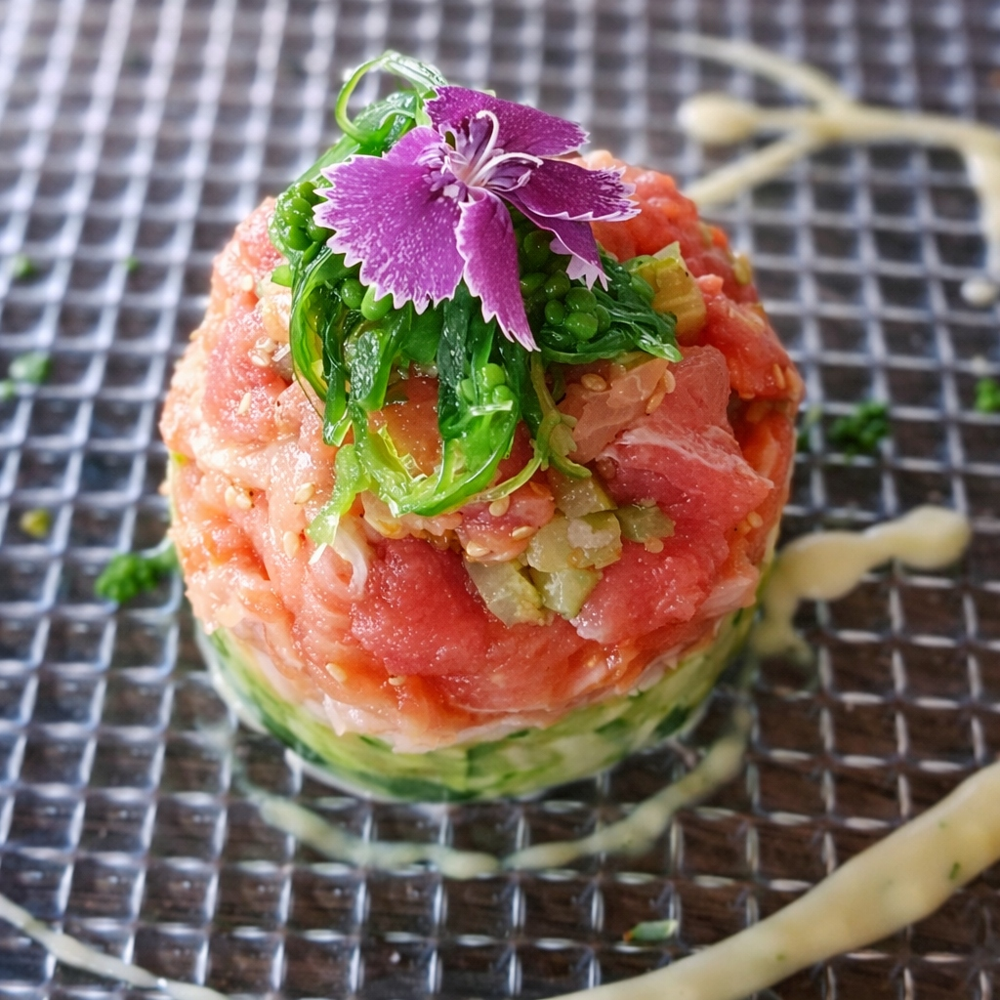
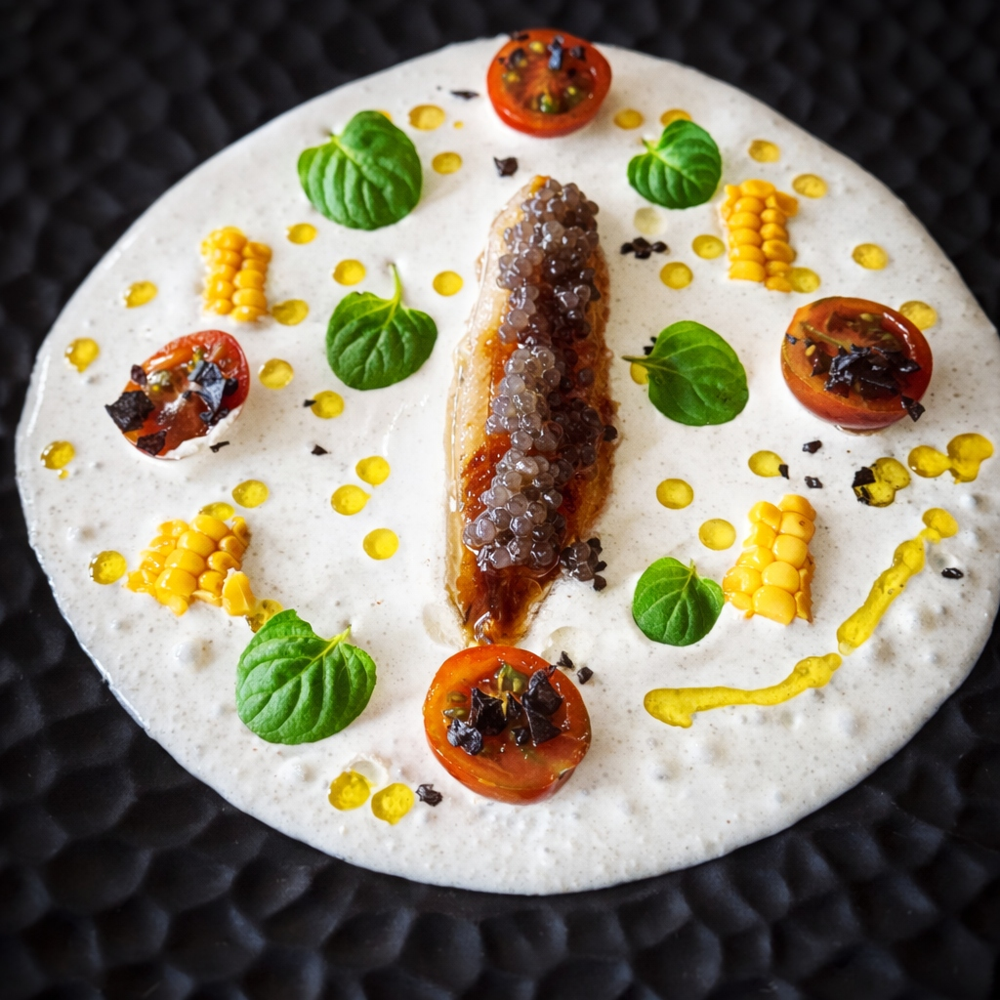
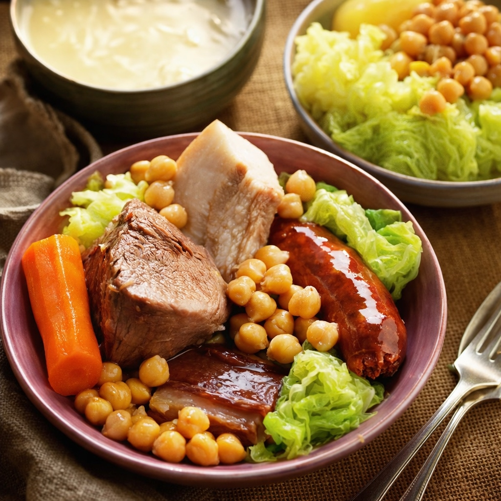
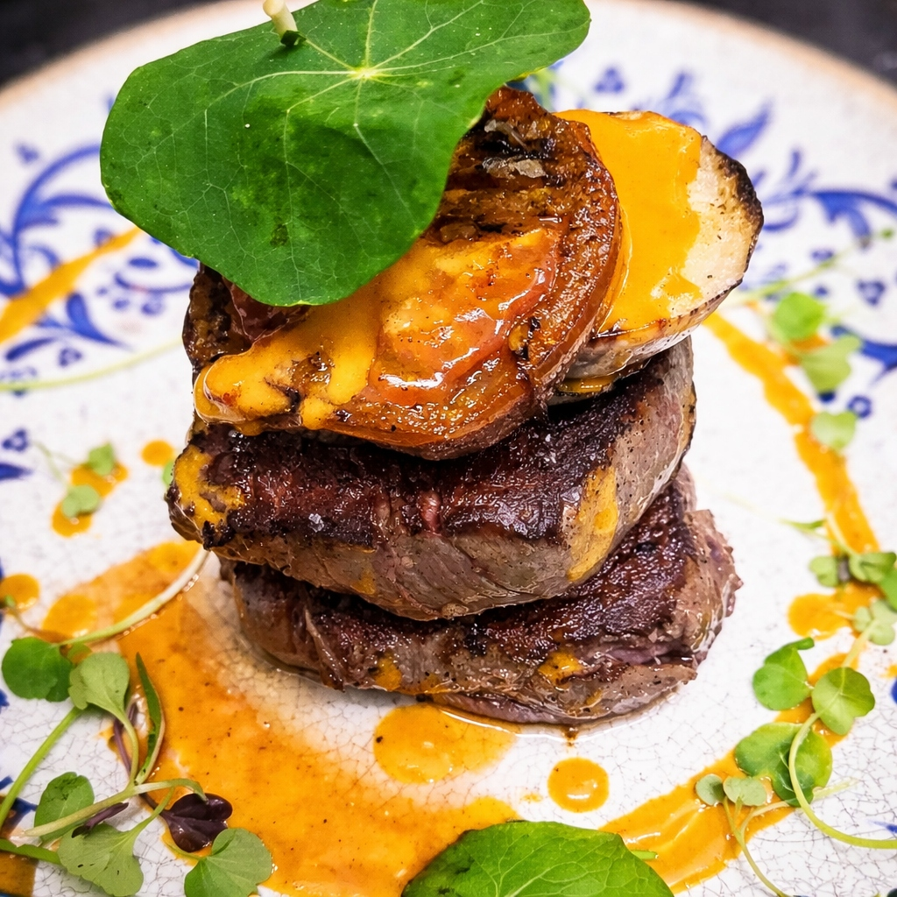
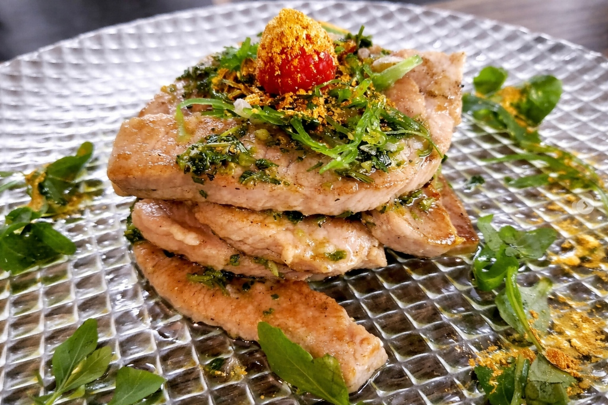

Nuestra Cocina
Platos de Temporada
Una selección de nuestras creaciones más recientes, elaboradas con productos de temporada y la esencia manchega.





La Zaranda en vídeo

Descubre Nuestra Historia
Horarios
- Lunes: 11:00–18:00
- Martes a Sábado: 11:00–23:30
- Domingo: Cerrado